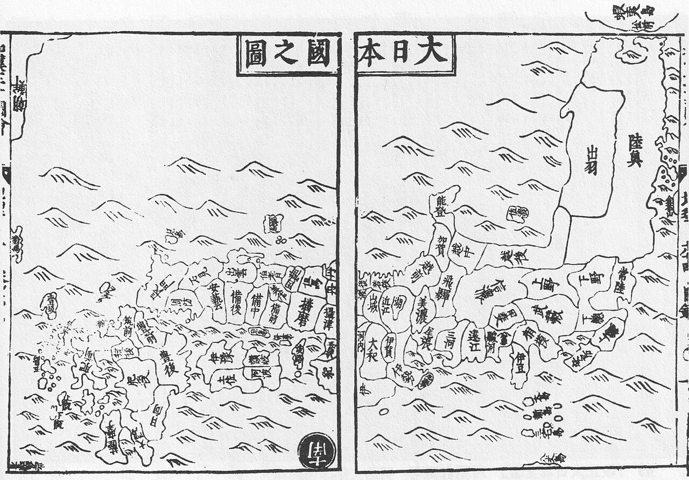
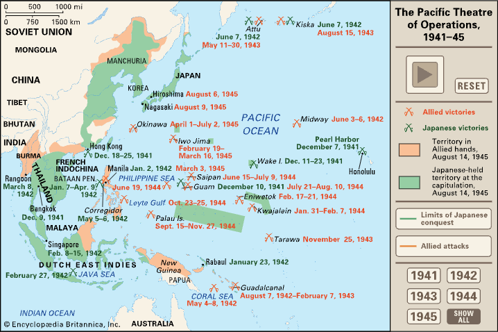
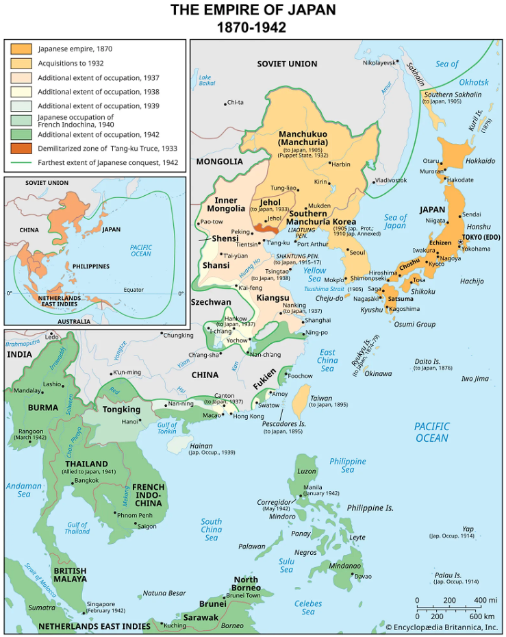
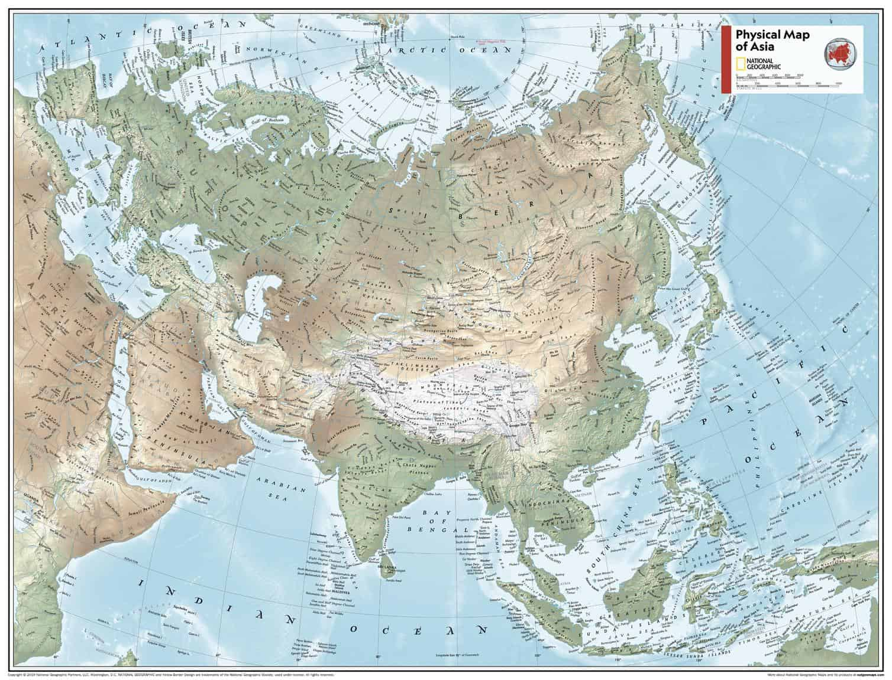
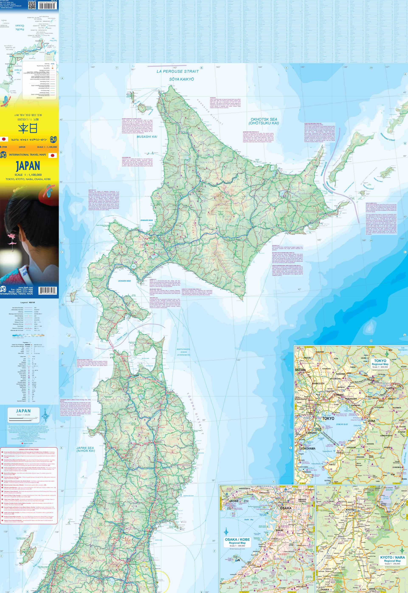
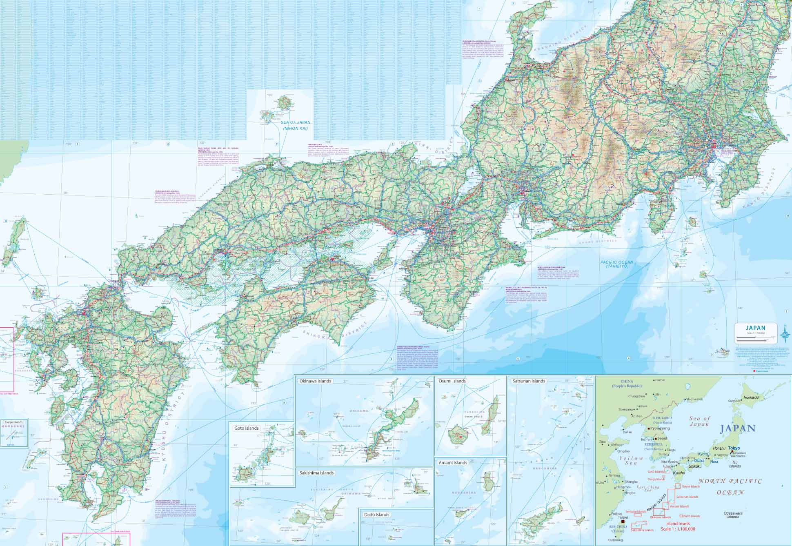
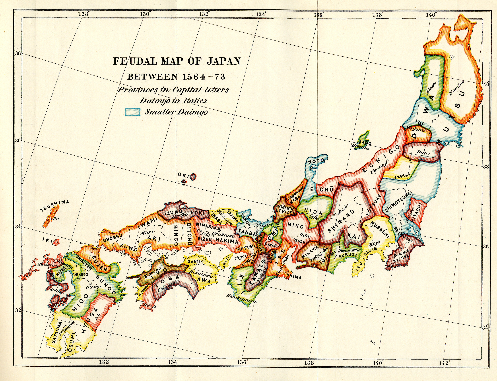
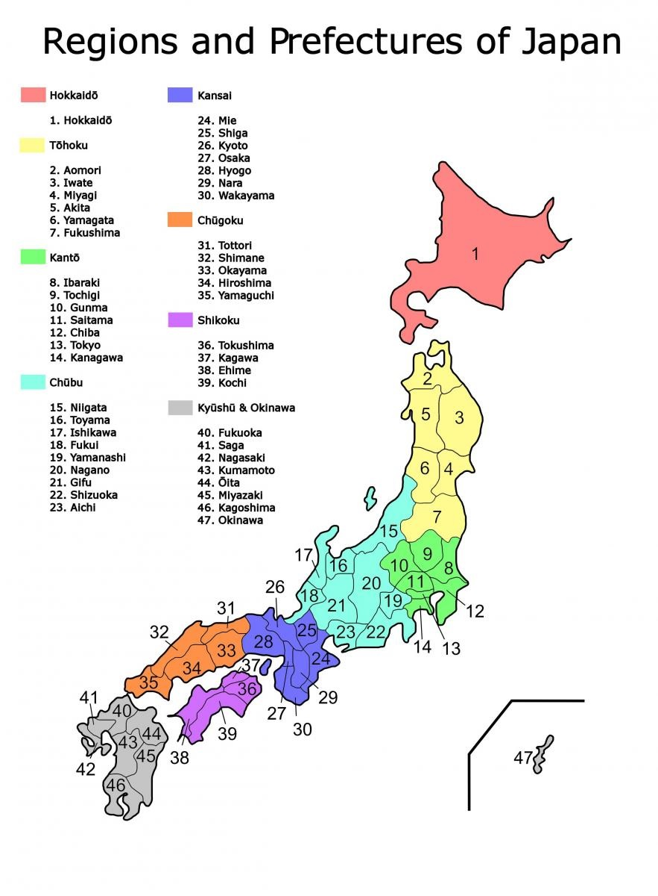

Japan is located on the Asian continent with a latitudinal range of 20° to 45° north latitude (“Geography of Japan,” 2026). Japan has been populated for at least 130,000 years, "during the last glacial period" (Japan National Tourism Organization (JNTO), n.d.)
"Dai-Nihonkoku no Chizu" translates to "Map of Great Japan. This particular Map was created by Terajima Ryôan in 1715 and depicts what people knew of Japan at that time. Terajima was credited as the compiler of the 'Wakan Sansai Zue', a series of writings and Maps in which this very map appears. Due to the technology of the time—or rather the lack thereof—maps in this book was created in the Gyōki style—a style known for its general artistic impression of the land rather than accurate depictions of the boundaries.
Dai-Nihonkoku no Chizu: "Map of Great Japan"

Note. From Dai-Nihonkoku no Chizu [Map], by R. Terajima, 1715, Wikimedia Commons (https://commons.wikimedia.org/wiki/File:Dai-Nihonkoku_no_Chizu.jpg). In the public domain.
These Maps cover the territory expansion Japan orchestrated during World War 2. Additionally, some of the loss of that territory is also covered in these maps.
The Japanese Empire, 1870–1910 and The Pacific Theater of Operations, 1941-1945


Note. From The Japanese Empire, 1870–1910 [Map], by Encyclopedia Britannica, Inc., 2026, Encyclopedia Britannica (https://www.britannica.com/event/World-War-II/The-war-in-the-Pacific-1938-41). Copyright 2026 by Encyclopedia Britannica, Inc.
Note. From The Pacific Theater of Operations, 1941-1945 [Map], by Encyclopædia Britannica, Inc., 2026, Encyclopædia Britannica (https://www.britannica.com/place/Empire-of-Japan). Copyright 2026 by Encyclopædia Britannica, Inc.
The 11th Edition of the Asia Physical Atlas of the World by National Geographic (2019) is at a scale of 1:17,654,000 and covers the entire Asian continent using a Two-Point Equidistant projection. Japan can be seen on the far eastern side of the main continent.
Physical Map of Asia

Note. From Asia physical [Map], by National Geographic Society, 2019, National Geographic. Copyright 2019 by National Geographic Society.
This Map comes from the ITMB Tokyo & Central Japan Map. Its projection is the Lambert Conformal Conic Projection, with a scale of 1:15,000 on the front and 1:800,000 on the back. It's a modern map designed for tourists many, featuring many landmarks and paths to aid anyone on their journey.
ITMB Tokyo & Central Japan Map (Front and Back)


Note. From Japan Travel Map -- ITMP (International Travel Maps) - ITM [Map], by ITMB Publishing, 2026, Mapworld & O’Keeffe (https://www.mapworld.com.au/blogs/news/best-maps-for-japan). Copyright 2026 by Mapworld.
Figure 7 is a map of Japan's provinces from 1564 to 1573. To show how Japan has grown, Figure 8 (though dated) depicts a more modern Japan, featuring the Prefectures that the provinces have in a way turned into.
Feudal Map of Japan Between 1564 and 1573 and Regions and Prefectures of Japan


Note. From Feudal Map of Japan between 1564–73 [Map, Plate 2], in A history of Japan during the century of early foreign intercourse (1542–1651), by J. Murdoch & I. Yamagata, 1903, Maproom.org (https://www.maproom.org/00/05/present.php?m=0002). In the public domain.
Note. From Regions & prefectures [Map], by EU-Japan Centre for Industrial Cooperation, n.d., EU Business in Japan (https://www.eu-japan.eu/eubusinessinjapan/about-japan/regions-prefectures). Copyright 2026 by EU-Japan Centre.
Gyōki was A Buddhist Priest, and is widely recognized as the founder of "mapping" in Japan (“Gyōki,” 2026). Because of this, he was considered "Japan's first Civil engineer." "No proof exists that Gyogi ever made a map himself; the term 'Gyogi-type maps' has come to be applied to early provincial maps he inspired" (“Gyōki,” 2026). What people took inspiration from was how he determined to depict the shape of countries as a "One-pointed Vajra." This relationship with boundaries and relationships between provinces is what created the concept of "Gyōki-zu maps."
Priest Gyoki before Kintetsu station (Nara)
Note. From Priest Gyoki before Kintetsu station (Nara) [Photograph], by Fraxinus2, ca. 2003, Wikimedia Commons (https://commons.wikimedia.org/wiki/File:Gyoki_Nara.jpg). CC BY-SA 3.0.